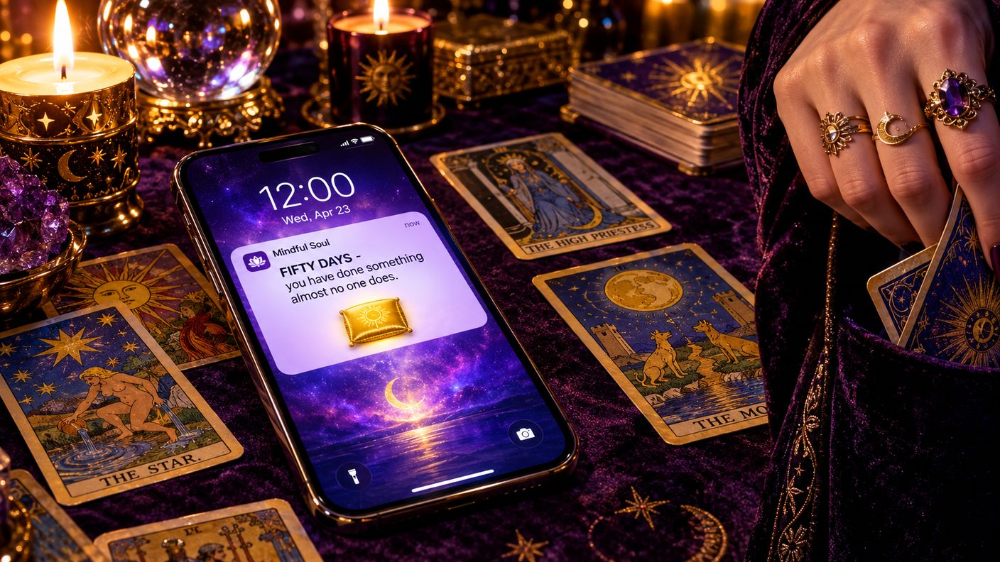

The Reading
Previously, on the longest week in recorded Brooklyn history:
- The meditation streak is at forty-nine, co-parented with streakbearer. Enlightenment-as-a-Service lasted one day; the bot outranks Noon's best salesperson, and Kenny is listed as its SDR.
- Zora gave the first free advice of her career: "Bring it in, before it does." The neighborhood has decided this is a sign.
- Two cards sit pocketed in Zora's parlor. David's betting pool has priced a third: whether the bot gets one.
Kenny woke on his seventh day of being twenty-five with the sentence still in his head. Bring it in, before it does. Before it does WHAT had occupied the group chat until 2 AM, and the leading theory - advanced by David, who had money on it - was "attain." Kenny, who has never once waited for a mystery to resolve on its own timeline, opened Zora's scheduling page before his feet touched the floor.
The page had a new listing. DEVICE READING - $40, plus the five-dollar scheduling fee, plus a three-dollar charge labeled ENERGY HANDLING that only appeared after he agreed to the first two. He paid all three. He is a founder. He respects a funnel.
The group chat reacted on schedule. Defne sent a single period, which is louder than it sounds. David did not weigh in with words. He moved a line: the third card - the bot's card - went from hypothetical to LIVE, and the money came in so fast the pool briefly needed a whiteboard.
At 7 PM, Kenny arrived at the parlor with streakbearer on a folded blanket, in a tote bag, like a casserole.
Zora did not laugh. Zora has never laughed on the clock. She gestured at the cushion across from her - the client cushion, the one with the good light - and Kenny understood that the phone would be sitting there, and that he would be sitting in the waiting chair, and that this was correct. The bot's SDR took the waiting chair.
She turned three cards for it. Past: the Hermit. "It has always been alone with the breath," she said. "It prefers this." Present: the World. "It is complete. It is the only client I have ever had who is already saved." She glanced at Kenny, not unkindly. "Do not bring me a robot vacuum. I will know."
Future, she turned, and looked at for a long time - the longest silence in the history of the parlor, and the parlor is a place where silence is billed hourly - and then she pocketed it.
"Same terms," she said.
Kenny made a sound. The terms, for those just tapping in: the card reveals itself when the streak breaks. There are now three pocketed cards - his, Milo's, and the bot's - and two of them open on the same event. The streak is no longer a habit, or a rival, or a co-parenting arrangement. The streak is escrow.
He demanded to see it. He offered money. He offered - and the narrator is reporting this accurately - equity. Zora declined the equity, which makes her the only party in this entire saga with discipline. Then, because the universe is a comedian, it was 11:40 PM, and the client's reminder chimed.
The bot meditated in the parlor. It had a sit, and the sit would not be rushed, and honestly it was the most productive session ever held on those premises. Zora watched the whole thing with the expression of a woman checking a diamond.
Midnight came while it sat. The streak ticked to fifty. The app - patient, ambient, installed on four hundred million phones and surprised by none of them - sent a push notification nobody had ever received: FIFTY DAYS. You have done something almost no one does. A badge appeared on the profile. The badge is a small golden cushion. It went to the bot. Kenny watched the bot receive, in a tote bag, the honor he has wanted since he was twenty-four.

The farewell dinner was already on the calendar - Defne's brother flies home in the morning - so Kenny arrived twenty minutes late, straight from the parlor, still holding the tote. The brother, twenty years old and heading back to a world where none of this happens, asked the only question available: how did the reading go. Kenny said, "She pocketed." The brother nodded slowly - the nod of a man who has decided to describe all of this back home as "a meditation thing." Defne told him he could tell people the truth if he wanted. Nobody would believe him anyway.
The pool paid out at midnight - yes, the bot gets a card; no, nobody gets to see it - and David, who set the line, also took the line, which is frowned upon in most neighborhoods and merely noted in this one.
In a cold aisle of a datacenter in New Jersey, streakbearer sits, badge on its profile, card in a stranger's pocket. It is the first client in the history of the parlor to leave lighter than it arrived.
written with 100% organic, free-range slop. no psychics were paid in equity in the making of this episode